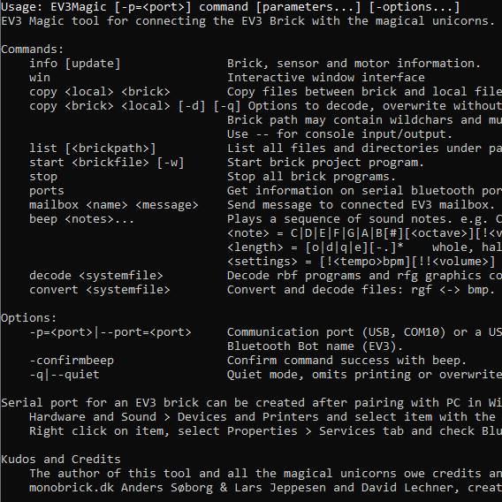
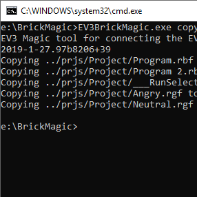
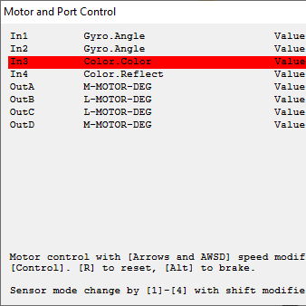
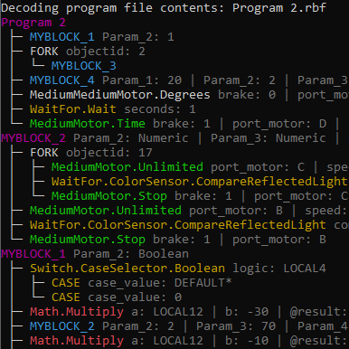
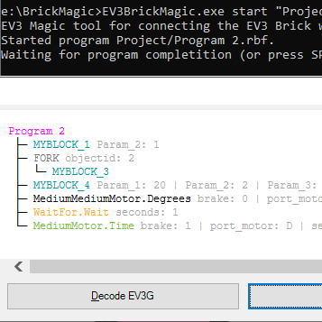
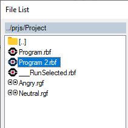
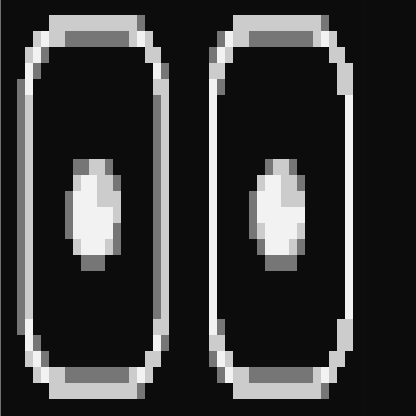
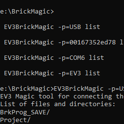
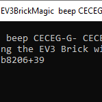

Capabilities for the EV3 Brick
I am grateful for the early beta testing effort and feedbacks to David Lechner and for the openness and ideas to Timm Merlan, Sanjay Seshan, Thomas Madeya, Kristof Nagy, Marc-Andre Bazergui and Illés Kökényesi.
Command Line
All functions with several options are available from command line to enable easy access or scripting.
Online with Browser

Graphical representation of the program with zoom and pan for a better/different visualization of your ev3 program.
Online version hosted in the Azure Cloud is out. Try it!
Project Overview

Overview of the EV3 Project with all Programs and MyBlocks visualized.
Dependency graph, variable usage, sound and image media usage is included.
Error detection

Several smaller or bigger errors can araise with your project. Some may cause smaller annoyances, same can even break your code.
EV3TreeVis shows missing variables, deleted myblocks, images and sounds and unused variables, images, sounds.
File Copy
EV3BrickMagic enables fast and easy file copy to and from the brick including extensive directory listing with wildcards.
From brick to local wildcarding and directory copy is enabled.
Brick content can be shown or decoded directly to the console without actual file copy as well including rbf program files and rgf graphics files.
Motor and Port Control
Brick motor and sensor control is available remotely from the PC. This provides an easier and more refined way to test or remote control your brick.
Motor control provides different slow-medium-fast motor powers also showing the actual current speed achieved with the motor - useful as a motor tester.
Port monitor supports all sensor modes, including the ones not shown with the official LEGO programs.
Decode RBF Program File
EV3 programs created with the Mindstorms program are compiled once they are copied to the brick. In the past several teams and individuals suffered from losing their because the original .ev3 file was lost due to PC issues.
While I encourage all teams to do proper backup and versioning - this tool is able to decode and show almost all EV3G blocks and structures compiled by the LEGO Mindstorms. This enables easier understanding of the real code and emergency backup.
Start and Stop Programs
Compiled programs on the brick can be started and stopped from the tool remotely.
Any running programs can be stopped remotely as well.
Interactive Window
Several functions can be accessed via the interactive window interface.
- This interface supports file browser with preview and copy functionality
- Motor and Port Control with visual feedback and display
- Mailbox messaging
Convert Graphics
EV3BrickMagic can convert bitmaps to and from LEGO RGF graphics file format. This can be somewhat faster and more convenient compared to the MINDSTORMS graphics tool.
Multiple Connections
Brick connection can be established via USB cable or via Bluetooth.
You can start the program is more than one instances establishing multiple connections - USB with brick serial id or BT connection with brick name or serial port id.
Sound and Piano
Playing music is fun. You can play music sequences with a simple command line parameter. Optionally you can specify octave, length and volume for each note and default volume and tempo globally.
Example: EV3BrickMagic.exe beep CECEG-G- CECEG-G- C6HAGF-A- GFEDC-C-